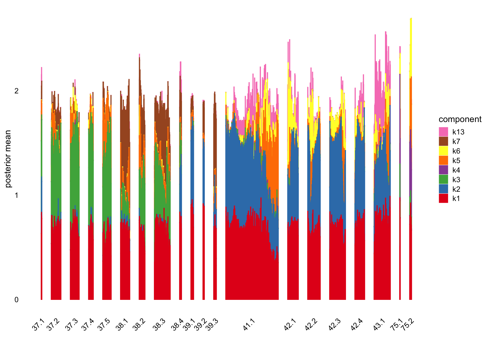
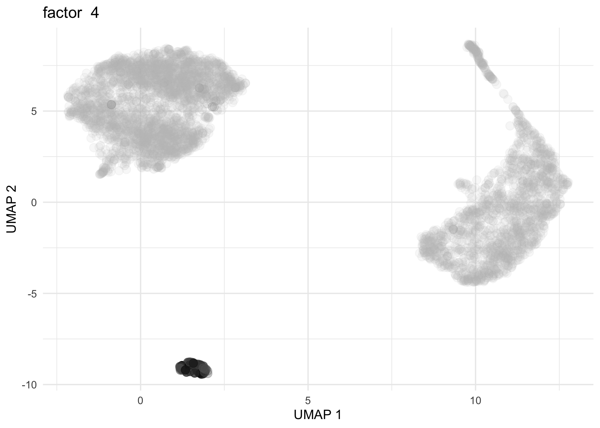

Initial exploration of the human brain dataset: committed OPC cells
Junming Guan
Last updated: 2024-11-21
Checks: 7 0
Knit directory:
single-cell-jamboree/analysis/
This reproducible R Markdown analysis was created with workflowr (version 1.7.1). The Checks tab describes the reproducibility checks that were applied when the results were created. The Past versions tab lists the development history.
Great! Since the R Markdown file has been committed to the Git repository, you know the exact version of the code that produced these results.
Great job! The global environment was empty. Objects defined in the global environment can affect the analysis in your R Markdown file in unknown ways. For reproduciblity it’s best to always run the code in an empty environment.
The command set.seed(1) was run prior to running the
code in the R Markdown file. Setting a seed ensures that any results
that rely on randomness, e.g. subsampling or permutations, are
reproducible.
Great job! Recording the operating system, R version, and package versions is critical for reproducibility.
Nice! There were no cached chunks for this analysis, so you can be confident that you successfully produced the results during this run.
Great job! Using relative paths to the files within your workflowr project makes it easier to run your code on other machines.
Great! You are using Git for version control. Tracking code development and connecting the code version to the results is critical for reproducibility.
The results in this page were generated with repository version 0d35e93. See the Past versions tab to see a history of the changes made to the R Markdown and HTML files.
Note that you need to be careful to ensure that all relevant files for
the analysis have been committed to Git prior to generating the results
(you can use wflow_publish or
wflow_git_commit). workflowr only checks the R Markdown
file, but you know if there are other scripts or data files that it
depends on. Below is the status of the Git repository when the results
were generated:
Ignored files:
Ignored: .Rhistory
Ignored: .Rproj.user/
Ignored: analysis/.Rhistory
Ignored: data/.Rhistory
Untracked files:
Untracked: .DS_Store
Untracked: .gitignore
Untracked: analysis/.DS_Store
Untracked: analysis/human_brain_Astrocyte.Rmd
Untracked: analysis/human_brain_COP_cells_fit.RData
Untracked: code/read_gene_set_data.R
Untracked: data/.DS_Store
Untracked: data/Homo_sapiens.gene_info.gz
Untracked: data/Human_brain_Astrocyte.rds
Untracked: data/human_brain_COP_cells_fit.RData
Unstaged changes:
Modified: scripts/human_brain_COP_cells_fit.R
Note that any generated files, e.g. HTML, png, CSS, etc., are not included in this status report because it is ok for generated content to have uncommitted changes.
These are the previous versions of the repository in which changes were
made to the R Markdown (analysis/human_brain_COP_cells.Rmd)
and HTML (docs/human_brain_COP_cells.html) files. If you’ve
configured a remote Git repository (see ?wflow_git_remote),
click on the hyperlinks in the table below to view the files as they
were in that past version.
| File | Version | Author | Date | Message |
|---|---|---|---|---|
| Rmd | 0d35e93 | junmingguan | 2024-11-21 | workflowr::wflow_publish("analysis/Human_brain_COP_cells.Rmd") |
| html | 47fa791 | junmingguan | 2024-11-17 | Build site. |
| Rmd | 8280492 | junmingguan | 2024-11-17 | workflowr::wflow_publish("analysis/human_brain_COP_cells.Rmd") |
| html | 7a353a3 | junmingguan | 2024-11-09 | Build site. |
| Rmd | e8fc53f | junmingguan | 2024-11-09 | workflowr::wflow_publish("human_brain_COP_cells.Rmd") |
Introduction
This single-nucleus RNA seq dataset is from the paper “Transcriptomic diversity of cell types across the adult human brain” (Siletti, 2023). around 3 millions nuclei were collected from around 100 dissections from the following areas of brains of 3 donors:
Forebrain:
cerebral cortex
cerebral nuclei
hypothalamus
hippocampus formation
thalamus complex
Midbrain
Hindbrain:
pons
cerebellum
Myelencephalon (Medulla)
Spinal cord
The authors performed hierarchical graph-based clustering, grouping the cells into superclusters, clusters, and subclusters. The data can be accessed here, with files organized by supercluster or by dissection.
This exploratory analysis focuses on committed oligodendrocyte precursor (COP) cells (see https://cellxgene.cziscience.com/e/f16f4108-7873-4035-9989-3748da1a7ff1.cxg/). There are 4,720 cells and 2,1462 genes (after QC) in the dataset.
library(Matrix)
# library(MatrixExtra)
library(flashier)
library(fastTopics)
library(ggplot2)
library(cowplot)
library(dplyr)
library(readr)
library(knitr)
# Warning: package 'knitr' was built under R version 4.3.3Load data and fit
# Taken from https://github.com/stephenslab/pathways/blob/master/inst/code/read_gene_set_data.R
read_gene_info <- function (file) {
# Read the data into a data frame.
out <- suppressMessages(read_delim(file,delim = "\t",col_names = TRUE))
class(out) <- "data.frame"
dbXrefs <- out$dbXrefs
out <- out[c("GeneID","Symbol","Synonyms","chromosome")]
# Set any entries with a single hyphen to NA, and convert the
# "chromosome" column to a factor.
out$chromosome[out$chromosome == "-"] <- NA
out$Synonyms[out$Synonyms == "-"] <- NA
dbXrefs[dbXrefs == "-"] <- NA
out <- transform(out,chromosome = factor(chromosome))
# Extract the Ensembl ids. Note that a small number of genes map to
# more than one Ensembl id; in those cases, we retain the first
# Ensembl id only.
dbXrefs <- strsplit(dbXrefs,"|",fixed = TRUE)
out$Ensembl <- sapply(dbXrefs,function (x) {
i <- which(substr(x,1,8) == "Ensembl:")
if (length(i) > 0)
return(substr(x[i[1]],9,nchar(x[i[1]])))
else
return(as.character(NA))
})
# For human genes, extract the HGNC (HUGO Gene Nomenclature
# Committee) ids.
out$HGNC <- sapply(dbXrefs,function (x) {
i <- which(substr(x,1,10) == "HGNC:HGNC:")
if (length(i) > 0)
return(substr(x[i[1]],6,nchar(x[i[1]])))
else
return(as.character(NA))
})
# Return the processed gene data.
return(out)
}
homo_sapien_geno_info <- read_gene_info('../data/Homo_sapiens.gene_info.gz')
data <- readRDS('../data/human_brain_COP_cells.rds')
counts <- t(data$RNA$data)
# Warning: package 'SeuratObject' was built under R version 4.3.3
# Keep only genes that match those in homo sapien gene info and remove those without nonzero counts
reduced_counts <-
counts[, colnames(counts) %in% homo_sapien_geno_info$Ensembl]
cols_to_keep <- colSums(reduced_counts != 0, na.rm = TRUE) > 0
reduced_counts <- reduced_counts[, cols_to_keep]
load('../data/human_brain_COP_cells_fit.RData')map_tissue <- function(tissue) {
if (tissue %in% c("cerebral cortex", "cerebral nuclei", "hypothalamus",
"hippocampal formation", "thalamic complex")) {
return("forebrain")
} else if (tissue == "midbrain") {
return("midbrain")
} else if (tissue %in% c("pons", "cerebellum", "myelencephalon")) {
return("hindbrain")
} else if (tissue == "spinal cord") {
return("spinal cord")
} else {
return(NA)
}
}
regions <- sapply(data$tissue, map_tissue)
t-SNE and UMAP
The dataset includes precomputed tSNE and UMAP embeddings, allowing us to plot them directly. We can color the cells by tissue, by region, or by cluster.
t-SNE
# colors <- brewer.pal(length(unique(data$tissue)), "Paired")
colors <- c('#756bb1', '#1c9099', '#d95f0e', '#edf8b1', '#dd1c77', '#636363', '#a1d99b', '#fa9fb5', '#fec44f', '#de2d26')
ggplot(Embeddings(data$tSNE) , aes(x = TSNE_1, y = TSNE_2, color = data$tissue)) +
geom_point(alpha = 0.7) +
labs(title = "t-SNE Plot Colored by Tissue Type", x = "t-SNE 1", y = "t-SNE 2") +
theme_minimal() +
scale_color_manual(values = colors)
| Version | Author | Date |
|---|---|---|
| 7a353a3 | junmingguan | 2024-11-09 |
# colors <- brewer.pal(length(unique(regions)), "Set1")
# ggplot(Embeddings(data$tSNE) , aes(x = TSNE_1, y = TSNE_2, color = regions)) +
# geom_point(alpha = 0.7) +
# labs(title = "t-SNE Plot Colored by Tissue Type", x = "t-SNE 1", y = "t-SNE 2") +
# theme_minimal() +
# scale_color_manual(values = colors)
# colors <- brewer.pal(length(unique(data$cluster_id)), "Paired")
colors <- c('#756bb1', '#1c9099', '#d95f0e', '#edf8b1', '#dd1c77', '#636363', '#a1d99b')
ggplot(Embeddings(data$tSNE) , aes(x = TSNE_1, y = TSNE_2, color = data$cluster_id)) +
geom_point(alpha = 0.7) +
labs(title = "t-SNE Plot Colored by Cluster", x = "t-SNE 1", y = "t-SNE 2") +
theme_minimal() +
scale_color_manual(values = colors)
| Version | Author | Date |
|---|---|---|
| 7a353a3 | junmingguan | 2024-11-09 |
UMAP
# colors <- brewer.pal(length(unique(data$tissue)), "Paired")
colors <- c('#756bb1', '#1c9099', '#d95f0e', '#edf8b1', '#dd1c77', '#636363', '#a1d99b', '#fa9fb5', '#fec44f', '#de2d26')
ggplot(Embeddings(data$UMAP) , aes(x = UMAP_1, y = UMAP_2, color = data$tissue)) +
geom_point(alpha = 0.7) +
labs(title = "UMAP Plot Colored by Tissue Type", x = "UMAP 1", y = "UMAP 2") +
theme_minimal() +
scale_color_manual(values = colors)
| Version | Author | Date |
|---|---|---|
| 7a353a3 | junmingguan | 2024-11-09 |
# ggplot(Embeddings(data$UMAP) , aes(x = UMAP_1, y = UMAP_2, color = regions)) +
# geom_point(alpha = 0.7) +
# labs(title = "UMAP Plot Colored by Tissue Type", x = "UMAP 1", y = "UMAP 2") +
# theme_minimal() +
# scale_color_manual(values = rainbow(length(unique(regions))))
# colors <- brewer.pal(length(unique(data$cluster_id)), "Paired")
colors <- c('#756bb1', '#1c9099', '#d95f0e', '#edf8b1', '#dd1c77', '#636363', '#a1d99b')
ggplot(Embeddings(data$UMAP) , aes(x = UMAP_1, y = UMAP_2, color = data$cluster_id)) +
geom_point(alpha = 0.7) +
labs(title = "UMAP Plot Colored by Cluster", x = "UMAP 1", y = "UMAP 2") +
theme_minimal() +
scale_color_manual(values = colors)
| Version | Author | Date |
|---|---|---|
| 7a353a3 | junmingguan | 2024-11-09 |
Flashier
NMF
Redefine subcluster ids so that the hierarchical structure is clearer
# M <- table(data$subcluster_id, data$cluster_id)
# M
subcluster_id <- as.vector(data$subcluster_id)
subcluster_id[subcluster_id == '3033'] <- '37.1'
subcluster_id[subcluster_id == '3035'] <- '37.2'
subcluster_id[subcluster_id == '3036'] <- '37.3'
subcluster_id[subcluster_id == '3037'] <- '37.4'
subcluster_id[subcluster_id == '3038'] <- '37.5'
subcluster_id[subcluster_id == '3030'] <- '38.1'
subcluster_id[subcluster_id == '3031'] <- '38.2'
subcluster_id[subcluster_id == '3032'] <- '38.3'
subcluster_id[subcluster_id == '3034'] <- '38.4'
subcluster_id[subcluster_id == '3027'] <- '39.1'
subcluster_id[subcluster_id == '3028'] <- '39.2'
subcluster_id[subcluster_id == '3029'] <- '39.3'
subcluster_id[subcluster_id == '3014'] <- '41.1'
subcluster_id[subcluster_id == '3015'] <- '42.2'
subcluster_id[subcluster_id == '3007'] <- '42.1'
subcluster_id[subcluster_id == '3008'] <- '42.2'
subcluster_id[subcluster_id == '3009'] <- '42.3'
subcluster_id[subcluster_id == '3010'] <- '42.4'
subcluster_id[subcluster_id == '3006'] <- '43.1'
subcluster_id[subcluster_id == '3195'] <- '75.1'
subcluster_id[subcluster_id == '3196'] <- '75.2'
subcluster_id <- factor(subcluster_id)flash_plot_scree(flashier_fit)
| Version | Author | Date |
|---|---|---|
| 7a353a3 | junmingguan | 2024-11-09 |
plot(flashier_fit,
plot_type = "heatmap",
pm_which = "loadings",
pm_groups = data$cluster_id,
gap = 25)
| Version | Author | Date |
|---|---|---|
| 7a353a3 | junmingguan | 2024-11-09 |
plot(flashier_fit,
plot_type = "histogram",
pm_which = "loadings",
pm_groups = data$cluster_id,
bins = 25)
| Version | Author | Date |
|---|---|---|
| 7a353a3 | junmingguan | 2024-11-09 |
plot(flashier_fit,
plot_type = "structure",
pm_which = "loadings",
pm_groups = data$cluster_id,
bins = 30, gap = 70)
| Version | Author | Date |
|---|---|---|
| 7a353a3 | junmingguan | 2024-11-09 |
plot(flashier_fit,
plot_type = "structure",
pm_which = "loadings",
pm_groups = subcluster_id,
bins = 60, gap = 100)
| Version | Author | Date |
|---|---|---|
| 7a353a3 | junmingguan | 2024-11-09 |
vals <- ldf(flashier_fit,type="m")
ncells <- colSums(vals$L>0.1)
ncells
# [1] 4720 3101 1557 79 2059 1640 1281 1 5 1 4 2 1800Several factors are load on only a small number of cells.
Removing those factors from the structure plots:
plot(flashier_fit,
kset = which(ncells > 5),
plot_type = "structure",
pm_which = "loadings",
pm_groups = data$cluster_id,
bins = 30, gap = 70)
| Version | Author | Date |
|---|---|---|
| 7a353a3 | junmingguan | 2024-11-09 |
plot(flashier_fit,
kset = which(ncells > 5),
plot_type = "structure",
pm_which = "loadings",
pm_groups = subcluster_id,
bins = 60, gap = 100)
| Version | Author | Date |
|---|---|---|
| 7a353a3 | junmingguan | 2024-11-09 |
Showing those factors in the structure plots:
plot(flashier_fit,
kset = which(ncells <= 5),
plot_type = "structure",
pm_which = "loadings",
pm_groups = data$cluster_id,
bins = 30, gap = 70)
| Version | Author | Date |
|---|---|---|
| 7a353a3 | junmingguan | 2024-11-09 |
plot(flashier_fit,
kset = which(ncells <= 5),
plot_type = "structure",
pm_which = "loadings",
pm_groups = subcluster_id,
bins = 60, gap = 100)
| Version | Author | Date |
|---|---|---|
| 7a353a3 | junmingguan | 2024-11-09 |
Top 5 driving genes for factors that are loading on a small number of cells
F <- with(vals, F %*% diag(D))
rownames(F) <- homo_sapien_geno_info$Symbol[match(rownames(F),
homo_sapien_geno_info$Ensembl)]
head(sort(F[,8], decreasing = TRUE), n = 16)
top_genes <- apply(F, 2, order, decreasing = TRUE)[1:5, which(ncells<=5)]
top_genes <- rownames(flashier_fit$F_pm)[top_genes]
plot(flashier_fit,
plot_type = "heatmap",
pm_which = "factors",
pm_subset = top_genes,
pm_groups = factor(top_genes),
kset = which(ncells<=5),
gap = 0.5)Plot of mean shifted log expression vs. change for factor 8, with top 5 genes (by largest increase)
plot(flashier_fit,
plot_type = "scatter",
pm_which = "factors",
kset = 8,
labels = TRUE,
n_labels = 5,
label_size = 2.5) +
labs(x = "increase in shifted log expression",
y = "mean shifted log expression") Symbols of top 5 driving genes for
top5_genes_factor_8 <-
sort(with(vals, F %*% diag(D))[, 8], decreasing = TRUE) %>%
head(., 5) %>%
names()
homo_sapien_geno_info[match(top5_genes_factor_8, homo_sapien_geno_info$Ensembl),
c('Symbol', 'Ensembl')]
# Symbol Ensembl
# 22566 MALAT1 ENSG00000251562
# 3394 MEF2C ENSG00000081189
# 7946 LPAR6 ENSG00000139679
# 5159 SLC1A3 ENSG00000079215
# 14744 OGFRL1 ENSG00000119900For factor 8
- MALAT1 (Metastasis-Associated Lung Adenocarcinoma Transcript 1)
- Long non-coding RNA (lncRNA)
- MEF2C (Myocyte Enhancer Factor 2C)
- Transcription factor
- LPAR6 (Lysophosphatidic Acid Receptor 6)
- G-protein-coupled receptor
- SLC1A3 (Solute Carrier Family 1 Member 3)
- Glutamate transporter
- OGFRL1 (Opioid Growth Factor Receptor-Like 1)
- Putative receptor
From chatGPT
Loadings on UMAP by factor
Factor 2, 3 and 4 are heavily loaded, whereas factor 8 and 9 are loaded on a single cell.
umap <- Embeddings(data$UMAP)
source('../code/plot_loadings_on_umap.R')
for (f in c(2, 3, 4, 8, 9)) {
loading <- vals$L[, f]
p <- plot_loadings_on_umap(umap, loading, f)
print(p)
}
| Version | Author | Date |
|---|---|---|
| 47fa791 | junmingguan | 2024-11-17 |
| Version | Author | Date |
|---|---|---|
| 47fa791 | junmingguan | 2024-11-17 |

| Version | Author | Date |
|---|---|---|
| 47fa791 | junmingguan | 2024-11-17 |
| Version | Author | Date |
|---|---|---|
| 47fa791 | junmingguan | 2024-11-17 |
| Version | Author | Date |
|---|---|---|
| 47fa791 | junmingguan | 2024-11-17 |
Semi-NMF
flash_plot_scree(flashier_fit_semi)
| Version | Author | Date |
|---|---|---|
| 7a353a3 | junmingguan | 2024-11-09 |
plot(flashier_fit_semi,
plot_type = "heatmap",
pm_which = "loadings",
pm_groups = data$cluster_id,
gap = 25)
| Version | Author | Date |
|---|---|---|
| 7a353a3 | junmingguan | 2024-11-09 |
plot(flashier_fit_semi,
plot_type = "histogram",
pm_which = "loadings",
pm_groups = data$cluster_id,
bins = 25)
| Version | Author | Date |
|---|---|---|
| 7a353a3 | junmingguan | 2024-11-09 |
plot(flashier_fit_semi,
plot_type = "structure",
pm_which = "loadings",
pm_groups = data$cluster_id,
bins = 30, gap = 70)
| Version | Author | Date |
|---|---|---|
| 7a353a3 | junmingguan | 2024-11-09 |
plot(flashier_fit_semi,
plot_type = "structure",
pm_which = "loadings",
pm_groups = subcluster_id,
bins = 60, gap = 100)
| Version | Author | Date |
|---|---|---|
| 7a353a3 | junmingguan | 2024-11-09 |
vals_semi <- ldf(flashier_fit_semi, type="m")
ncells_semi <- colSums(vals_semi$L>0.1)
ncells_semi
# [1] 4720 3074 1702 72 558 1205 2239 1 308 1669 1 1497 1704 181 1584
# [16] 1 1 1831 1900 3 126 1 2 1 3 1 2 5 1 6
# [31] 1 2 1 1 4 1 1 5 1 1 4 2 1 4 2
# [46] 2 2 3 1 3Several factors are load on only a small number of cells.
Removing those factors from the structure plots:
plot(flashier_fit_semi,
kset = which(ncells_semi > 5),
plot_type = "structure",
pm_which = "loadings",
pm_groups = data$cluster_id,
bins = 30, gap = 70)
| Version | Author | Date |
|---|---|---|
| 7a353a3 | junmingguan | 2024-11-09 |
plot(flashier_fit_semi,
kset = which(ncells_semi > 5),
plot_type = "structure",
pm_which = "loadings",
pm_groups = subcluster_id,
bins = 60, gap = 100)
| Version | Author | Date |
|---|---|---|
| 7a353a3 | junmingguan | 2024-11-09 |
Showing factors that are only loaded on a small number of cells:
plot(flashier_fit_semi,
kset = which(ncells_semi <= 5),
plot_type = "structure",
pm_which = "loadings",
pm_groups = data$cluster_id,
bins = 30, gap = 70)
| Version | Author | Date |
|---|---|---|
| 7a353a3 | junmingguan | 2024-11-09 |
plot(flashier_fit_semi,
kset = which(ncells_semi <= 5),
plot_type = "structure",
pm_which = "loadings",
pm_groups = subcluster_id,
bins = 60, gap = 100)
| Version | Author | Date |
|---|---|---|
| 7a353a3 | junmingguan | 2024-11-09 |
Top 5 driving genes for factors that are loading on a small number of cells
F <- with(vals_semi, F %*% diag(D))
rownames(F) <- homo_sapien_geno_info$Symbol[match(rownames(F),
homo_sapien_geno_info$Ensembl)]
head(sort(F[,8], decreasing = TRUE), n = 16)
# top_genes <- apply(F, 2, order, decreasing = TRUE)[1:5, c(8, 11)]
# top_genes <- rownames(flashier_fit_semi$F_pm)[top_genes]
#
# plot(flashier_fit_semi,
# plot_type = "heatmap",
# pm_which = "factors",
# pm_subset = top_genes,
# pm_groups = factor(top_genes),
# kset = c(8, 11),
# gap = 0.5)Plot of mean shifted log expression vs. change for factor 8, with top 5 genes (by largest increase)
plot(flashier_fit_semi,
plot_type = "scatter",
pm_which = "factors",
kset = c(8, 11, 16),
labels = TRUE,
n_labels = 5,
label_size = 2.5) +
labs(x = "increase in shifted log expression",
y = "mean shifted log expression") Symbols of top 5 driving genes for factor 11
top5_genes_factor_11 <-
sort(with(vals_semi, F %*% diag(D))[, 11], decreasing = TRUE) %>%
head(., 5) %>%
names()
homo_sapien_geno_info[match(top5_genes_factor_11, homo_sapien_geno_info$Ensembl),
c('Symbol', 'Ensembl')]
# Symbol Ensembl
# 22566 MALAT1 ENSG00000251562
# 14744 OGFRL1 ENSG00000119900
# 43448 HIF1A-AS3 ENSG00000258667
# 7946 LPAR6 ENSG00000139679
# 5159 SLC1A3 ENSG00000079215For factor 8
- MALAT1 (Metastasis-Associated Lung Adenocarcinoma Transcript 1)
- Long non-coding RNA (lncRNA)
- OGFRL1 (Opioid Growth Factor Receptor-Like 1)
- Putative receptor
- HIF1A-AS3
- Associated with hypoxia regulation and cancer biology
- Long non-coding RNA (lncRNA)
- LPAR6 (Lysophosphatidic Acid Receptor 6)
- G-protein-coupled receptor
- SLC1A3 (Solute Carrier Family 1 Member 3)
- Glutamate transporter From chatGPT
Loadings on UMAP by factor
Factor 2 and 3 are heavily loaded, whereas factor 4, 8 and 11 are loaded on a few cells.
umap <- Embeddings(data$UMAP)
source('../code/plot_loadings_on_umap.R')
for (f in c(2, 3, 4, 8, 11)) {
loading <- vals_semi$L[, f]
p <- plot_loadings_on_umap(umap, loading, f)
print(p)
}
| Version | Author | Date |
|---|---|---|
| 47fa791 | junmingguan | 2024-11-17 |
| Version | Author | Date |
|---|---|---|
| 47fa791 | junmingguan | 2024-11-17 |
| Version | Author | Date |
|---|---|---|
| 47fa791 | junmingguan | 2024-11-17 |
| Version | Author | Date |
|---|---|---|
| 47fa791 | junmingguan | 2024-11-17 |
Comparison
plot(flashier_fit,
kset = which(ncells > 5),
plot_type = "structure",
pm_which = "loadings",
pm_groups = data$cluster_id,
bins = 30, gap = 70)
| Version | Author | Date |
|---|---|---|
| 7a353a3 | junmingguan | 2024-11-09 |
plot(flashier_fit_semi,
kset = which(ncells_semi > 5),
plot_type = "structure",
pm_which = "loadings",
pm_groups = data$cluster_id,
bins = 30, gap = 70)
| Version | Author | Date |
|---|---|---|
| 7a353a3 | junmingguan | 2024-11-09 |
which.max(vals$L[, 8])
which.max(vals_semi$L[, 11])
# 10X390_3:GTTGTGAAGGCACGAT
# 1706
# 10X390_3:GTTGTGAAGGCACGAT
# 1706Both actor 8 from Flashier NMF and factor 11 from Flashier semi-NMF seem to be loaded on the same cell.
FastTopics
K = 50
plot_progress(fasttopics_fit_50,x = "iter",add.point.every = 10,colors = "black") +
theme_cowplot(font_size = 10)loglik <- loglik_multinom_topic_model(reduced_counts, fasttopics_fit_50)
pdat <- data.frame(loglik)
ggplot(pdat,aes(loglik)) +
geom_histogram(bins = 64,color = "white",fill = "black",size = 0.25) +
labs(y = "number of cells") +
theme_cowplot(font_size = 10)
# Warning: Using `size` aesthetic for lines was deprecated in ggplot2 3.4.0.
# ℹ Please use `linewidth` instead.
# This warning is displayed once every 8 hours.
# Call `lifecycle::last_lifecycle_warnings()` to see where this warning was
# generated.
subpop_colors <- c("red", "blue", "green", "purple", "orange", "pink", "cyan", "brown", "yellow", "darkgreen")
pdat <- data.frame(loglik = loglik,subpop = data$cluster_id)
ggplot(pdat,aes(x = loglik,fill = subpop)) +
geom_histogram(bins = 64,color = "white",size = 0.25) +
scale_fill_manual(values = subpop_colors) +
labs(y = "number of cells") +
theme_cowplot(font_size = 10)
structure_plot(fasttopics_fit_50, grouping = data$cluster_id, gap = 70)structure_plot(fasttopics_fit_50, grouping = subcluster_id, gap = 70)ncells_ft_50 <- colSums(fasttopics_fit_50$L>0.1)
ncells_ft_50
# k1 k2 k3 k4 k5 k6 k7 k8 k9 k10 k11 k12 k13 k14 k15 k16
# 251 252 355 22 25 138 10 10 51 49 7 70 552 46 217 449
# k17 k18 k19 k20 k21 k22 k23 k24 k25 k26 k27 k28 k29 k30 k31 k32
# 113 70 205 1667 154 194 265 174 398 152 384 29 124 327 144 925
# k33 k34 k35 k36 k37 k38 k39 k40 k41 k42 k43 k44 k45 k46 k47 k48
# 577 152 81 1025 163 267 354 13 75 61 518 297 45 92 889 136
# k49 k50
# 101 1026No factors that are loaded on a single cells. Still there are a couple that are loaded on a small number of cells, e.g., k11.
Removing factors that are loading on few than 200.
structure_plot(fasttopics_fit_50, topics = which(ncells_ft_50 >200),
grouping = data$cluster_id, gap = 70)pca_plot(fasttopics_fit_50,fill = data$cluster_id)pca_hexbin_plot(fasttopics_fit_50,bins = 24)Top 5 driving genes for factors loaded on a few cells
top5_genes_factor_7 <-
sort(fasttopics_fit_50$F[, 7], decreasing = TRUE) %>%
head(., 5) %>%
names()
homo_sapien_geno_info[match(top5_genes_factor_7, homo_sapien_geno_info$Ensembl),
c('Symbol', 'Ensembl')]
sort(fasttopics_fit_50$F[, 7], decreasing = TRUE) %>%
head(., 5)
top5_genes_factor_8 <-
sort(fasttopics_fit_50$F[, 8], decreasing = TRUE) %>%
head(., 5) %>%
names()
homo_sapien_geno_info[match(top5_genes_factor_8, homo_sapien_geno_info$Ensembl),
c('Symbol', 'Ensembl')]
sort(fasttopics_fit_50$F[, 8], decreasing = TRUE) %>%
head(., 5)
top5_genes_factor_11 <-
sort(fasttopics_fit_50$F[, 11], decreasing = TRUE) %>%
head(., 5) %>%
names()
homo_sapien_geno_info[match(top5_genes_factor_11, homo_sapien_geno_info$Ensembl),
c('Symbol', 'Ensembl')]
sort(fasttopics_fit_50$F[, 11], decreasing = TRUE) %>%
head(., 5)
# Symbol Ensembl
# 1661 ERBB4 ENSG00000178568
# 22566 MALAT1 ENSG00000251562
# 3257 LSAMP ENSG00000185565
# 20214 CADM2 ENSG00000175161
# 8975 NLGN1 ENSG00000169760
# ENSG00000178568 ENSG00000251562 ENSG00000185565 ENSG00000175161 ENSG00000169760
# 0.11622755 0.03573029 0.02356664 0.01785754 0.01396652
# Symbol Ensembl
# 4047 PDE4B ENSG00000184588
# 22566 MALAT1 ENSG00000251562
# 4357 PPP2R2B ENSG00000156475
# 20214 CADM2 ENSG00000175161
# 3257 LSAMP ENSG00000185565
# ENSG00000184588 ENSG00000251562 ENSG00000156475 ENSG00000175161 ENSG00000185565
# 0.14022764 0.03307322 0.01717360 0.01491126 0.00890551
# Symbol Ensembl
# 4357 PPP2R2B ENSG00000156475
# 15995 MAML2 ENSG00000184384
# 20214 CADM2 ENSG00000175161
# 21942 NCKAP5 ENSG00000176771
# 16290 FRMD5 ENSG00000171877
# ENSG00000156475 ENSG00000184384 ENSG00000175161 ENSG00000176771 ENSG00000171877
# 0.262879278 0.005688911 0.005418745 0.004842882 0.004461895- ERBB4 (Receptor Tyrosine-Protein Kinase ErbB-4):
- Part of the EGFR family.
- Involved in cell growth, survival, and differentiation.
- Dysregulation is linked to cancer and neurodevelopmental disorders.
- PDE4B (Phosphodiesterase 4B):
- Degrades cAMP, a secondary messenger in cellular signaling.
- Implicated in psychiatric conditions, including schizophrenia and depression.
- PPP2R2B (Protein Phosphatase 2 Regulatory Subunit Bbeta):
- Regulates protein dephosphorylation.
- Associated with spinocerebellar ataxias and neurodegeneration. From chatgpt
K = 10
plot_progress(fasttopics_fit_10,x = "iter",add.point.every = 10,colors = "black") +
theme_cowplot(font_size = 10)loglik <- loglik_multinom_topic_model(reduced_counts, fasttopics_fit_10)
pdat <- data.frame(loglik)
ggplot(pdat,aes(loglik)) +
geom_histogram(bins = 64,color = "white",fill = "black",size = 0.25) +
labs(y = "number of cells") +
theme_cowplot(font_size = 10)
subpop_colors <- c("red", "blue", "green", "purple", "orange", "pink", "cyan", "brown", "yellow", "darkgreen")
pdat <- data.frame(loglik = loglik,subpop = data$cluster_id)
ggplot(pdat,aes(x = loglik,fill = subpop)) +
geom_histogram(bins = 64,color = "white",size = 0.25) +
scale_fill_manual(values = subpop_colors) +
labs(y = "number of cells") +
theme_cowplot(font_size = 10)structure_plot(fasttopics_fit_10, grouping = data$cluster_id, gap = 70)structure_plot(fasttopics_fit_10, grouping = subcluster_id, gap = 70)ncells_ft_10 <- colSums(fasttopics_fit_10$L>0.1)
ncells_ft_10
# k1 k2 k3 k4 k5 k6 k7 k8 k9 k10
# 1140 976 394 1141 671 3011 1360 1276 61 234Removing factor 9
structure_plot(fasttopics_fit_10, topics = which(ncells_ft_10 > 61),
grouping = data$cluster_id, gap = 70)structure_plot(fasttopics_fit_10, topics = which(ncells_ft_10 > 61),
grouping = subcluster_id, gap = 70)pca_plot(fasttopics_fit_10,fill = data$cluster_id)pca_hexbin_plot(fasttopics_fit_10,bins = 24)top5_genes_factor_9 <-
sort(fasttopics_fit_10$F[, 9], decreasing = TRUE) %>%
head(., 5) %>%
names()
homo_sapien_geno_info[match(top5_genes_factor_9, homo_sapien_geno_info$Ensembl),
c('Symbol', 'Ensembl')]
sort(fasttopics_fit_10$F[, 9], decreasing = TRUE) %>%
head(., 5)
# Symbol Ensembl
# 5839 TTR ENSG00000118271
# 22566 MALAT1 ENSG00000251562
# 15061 TRPM3 ENSG00000083067
# 2734 HTR2C ENSG00000147246
# 15202 KCNIP4 ENSG00000185774
# ENSG00000118271 ENSG00000251562 ENSG00000083067 ENSG00000147246 ENSG00000185774
# 0.191939663 0.023044075 0.005731441 0.003988197 0.003979024“TTR encodes Transthyretin, a protein primarily synthesized in the liver and choroid plexus of the brain.” From chatGPT
GBCD
TODO
# source("../code/fit_cov_ebnmf.R")
#
# fit.gbcd <-
# flash_fit_cov_ebnmf(Y = reduced_counts, Kmax = 7,
# prior = flash_ebnm(prior_family = "generalized_binary",
# scale = 0.04),
# extrapolate = FALSE)
sessionInfo()
# R version 4.3.1 (2023-06-16)
# Platform: aarch64-apple-darwin20 (64-bit)
# Running under: macOS Sonoma 14.5
#
# Matrix products: default
# BLAS: /Library/Frameworks/R.framework/Versions/4.3-arm64/Resources/lib/libRblas.0.dylib
# LAPACK: /Library/Frameworks/R.framework/Versions/4.3-arm64/Resources/lib/libRlapack.dylib; LAPACK version 3.11.0
#
# locale:
# [1] en_US.UTF-8/en_US.UTF-8/en_US.UTF-8/C/en_US.UTF-8/en_US.UTF-8
#
# time zone: America/Chicago
# tzcode source: internal
#
# attached base packages:
# [1] stats graphics grDevices utils datasets methods base
#
# other attached packages:
# [1] SeuratObject_5.0.2 sp_2.1-4 knitr_1.48 readr_2.1.4
# [5] dplyr_1.1.4 cowplot_1.1.3 ggplot2_3.5.1 fastTopics_0.6-192
# [9] flashier_1.0.54 ebnm_1.1-34 Matrix_1.6-4
#
# loaded via a namespace (and not attached):
# [1] pbapply_1.7-2 rlang_1.1.4 magrittr_2.0.3
# [4] git2r_0.35.0 horseshoe_0.2.0 compiler_4.3.1
# [7] vctrs_0.6.5 quadprog_1.5-8 stringr_1.5.1
# [10] pkgconfig_2.0.3 crayon_1.5.3 fastmap_1.2.0
# [13] labeling_0.4.3 utf8_1.2.4 promises_1.3.0
# [16] rmarkdown_2.28 tzdb_0.4.0 purrr_1.0.2
# [19] bit_4.0.5 xfun_0.48 cachem_1.1.0
# [22] trust_0.1-8 jsonlite_1.8.9 progress_1.2.3
# [25] highr_0.11 later_1.3.2 irlba_2.3.5.1
# [28] parallel_4.3.1 prettyunits_1.2.0 R6_2.5.1
# [31] bslib_0.8.0 stringi_1.8.4 RColorBrewer_1.1-3
# [34] SQUAREM_2021.1 parallelly_1.38.0 jquerylib_0.1.4
# [37] Rcpp_1.0.13 future.apply_1.11.3 httpuv_1.6.14
# [40] splines_4.3.1 tidyselect_1.2.1 rstudioapi_0.15.0
# [43] yaml_2.3.10 codetools_0.2-19 listenv_0.9.1
# [46] lattice_0.21-8 tibble_3.2.1 withr_3.0.2
# [49] evaluate_1.0.1 Rtsne_0.17 future_1.34.0
# [52] RcppParallel_5.1.9 pillar_1.9.0 whisker_0.4.1
# [55] plotly_4.10.4 softImpute_1.4-1 generics_0.1.3
# [58] vroom_1.6.3 rprojroot_2.0.3 invgamma_1.1
# [61] truncnorm_1.0-9 hms_1.1.3 munsell_0.5.1
# [64] scales_1.3.0 ashr_2.2-63 gtools_3.9.5
# [67] globals_0.16.3 RhpcBLASctl_0.23-42 glue_1.8.0
# [70] scatterplot3d_0.3-44 lazyeval_0.2.2 tools_4.3.1
# [73] hexbin_1.28.5 data.table_1.16.2 dotCall64_1.2
# [76] fs_1.6.4 grid_4.3.1 tidyr_1.3.1
# [79] colorspace_2.1-1 deconvolveR_1.2-1 cli_3.6.3
# [82] Polychrome_1.5.1 workflowr_1.7.1 spam_2.11-0
# [85] fansi_1.0.6 mixsqp_0.3-54 viridisLite_0.4.2
# [88] uwot_0.1.16 gtable_0.3.6 sass_0.4.9
# [91] digest_0.6.37 progressr_0.14.0 ggrepel_0.9.6
# [94] farver_2.1.2 htmlwidgets_1.6.4 htmltools_0.5.8.1
# [97] lifecycle_1.0.4 httr_1.4.7 bit64_4.0.5